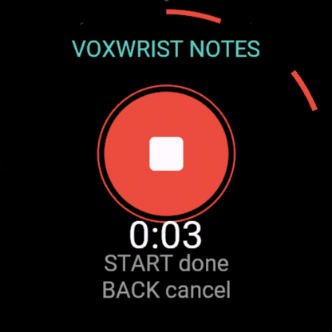
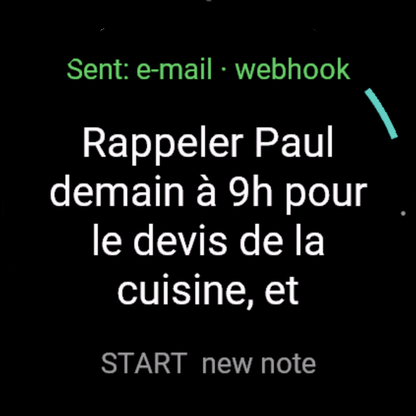
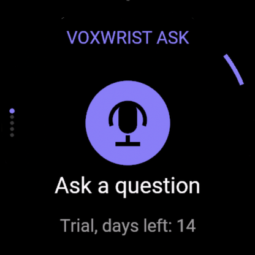

Voxwrist
Votre voix, depuis votre montre Garmin. Deux appuis, sans clavier. Vos données restent chez vous.
Voxwrist Notes
START, parlez, START. La transcription arrive par e-mail ou webhook (n8n, Todoist, Notion…). Fonctionne hors connexion : la note part plus tard.
4,99 € · essai 14 jours
Voxwrist Ask
Posez une question à votre IA (Ollama, OpenAI, Mistral…). Réponse à l'écran et à voix haute. Requêtes rapides en un appui.
5,99 € · essai 14 jours




Installation en 3 étapes
- Lancez le relais (gratuit, open source) :
docker compose up -dsur un PC, NAS, Raspberry Pi ou VPS. - Rendez-le accessible en HTTPS : Cloudflare Tunnel ou Tailscale Funnel (gratuits), ou Caddy avec votre domaine.
- Dans Garmin Connect › Applis Connect IQ › Voxwrist › Paramètres : collez l'adresse du relais et le jeton. La montre passe alors à l’écran « START ».
Compatibilité : montres Garmin avec micro (Connect IQ 6.0.3+) : fēnix 8 / 8 Pro / fēnix E / 9, enduro 3 / 4, Forerunner 570 / 970 / 170 / 70, Venu 4 / X1, vívoactive 6, MARQ 3, D2 Mach 2, Approach S72. Haut-parleur requis pour la réponse parlée.
Politique de confidentialité · Guide du relais : [lien GitHub du relais]
English
Voxwrist Notes: press START, speak, press START — get the transcript by e-mail or webhook (n8n, Todoist, Notion…), even after being offline. Voxwrist Ask: ask your AI (Ollama, OpenAI, Mistral…) and read or hear the answer.
Both apps talk only to a free, open-source Voxwrist Relay you host (Docker), reachable over HTTPS (Cloudflare Tunnel, Tailscale Funnel or Caddy). Audio is kept in memory only and deleted right after transcription. Privacy policy.